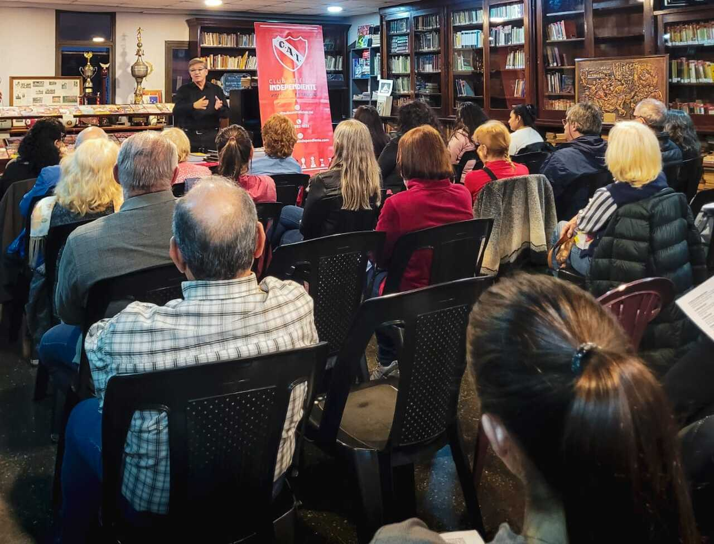

Depto. de Mujeres, Género y Diversidad
El Departamento participó el sábado 29 de junio en lo que fue el Primer Congreso de Mujeres dirigentes en el Complejo Cultural Municipal Rigolleau de Berazategui.
Depto. de Mujeres, Género y Diversidad
El Departamento de Mujeres, Género y Diversidad junto a Rojo Solidario del Club Atlético Independiente, participaron en la primera capacitación integral del fútbol argentino para mujeres dirigentes.

JUNTOS POR EL LITORAL
Independiente, junto a otros clubes, colaboró con los evacuados de las inundaciones.

IMPORTANTE CHARLA PARA VITALICIOS
Jornada de reflexión por el Día de la Toma de Conciencia del Abuso y Maltrato en las Personas Mayores
JUVENILES EN VIVO VS. GODOY CRUZ
Por la fecha 2 del campeonato, las categorías Menores reciben a Godoy Cruz en Villa Domínico. #Independiente #Diablas #TodoRojo JUVENILES EN VIVO VS. GODOY CRUZ
si queres dejar tu propia pregunta, por favor rellena el siguiente formulario: